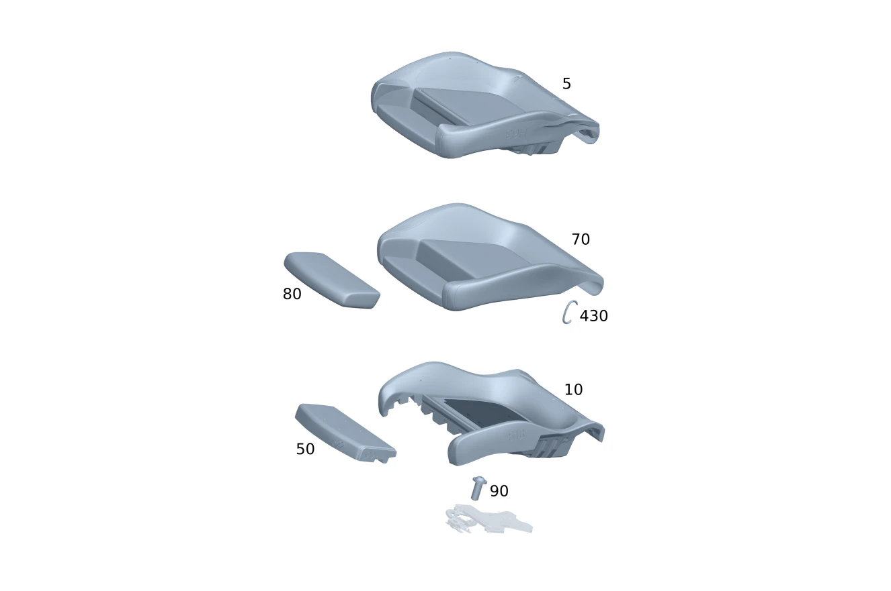

| № | Артикул | Название | Кол. | Примечание | Ограничение |
|---|---|---|---|---|---|
| 5 | A 174 910 39 04 | Ремк-т подушки сид.вод. | 1 | Подушка переднего сиденья слева Рулевое управление: Вправо | 7U2+275+100A+U10 |
| 5 | A 174 910 07 04 | Ремк-т подушки сид.вод. | 1 | Подушка переднего сиденья слева Рулевое управление: Вправо | 7U2+100A+U10 |
| 5 | A 174 910 41 04 | Ремк-т подушки сид.вод. | 1 | Подушка переднего сиденья слева Рулевое управление: Вправо | 7U2+275+200A+U10 |
| 5 | A 174 910 09 04 | Ремк-т подушки сид.вод. | 1 | Подушка переднего сиденья слева Рулевое управление: Вправо | 7U2+200A+U10 |
| 5 | A 174 910 42 04 | Ремк-т подушки сид.вод. | 1 | Подушка переднего сиденья слева Рулевое управление: Вправо | 7U2+275+220A+U10 |
| 5 | A 174 910 10 04 | Ремк-т подушки сид.вод. | 1 | Подушка переднего сиденья слева Рулевое управление: Вправо | 7U2+220A+U10 |
| 5 | A 174 910 40 04 | Ремк-т подушки сид.вод. | 1 | Подушка переднего сиденья слева Рулевое управление: Вправо | 7U2+275+300A+U10 |
| 5 | A 174 910 08 04 | Ремк-т подушки сид.вод. | 1 | Подушка переднего сиденья слева Рулевое управление: Вправо | 7U2+300A+U10 |
| 5 | A 174 910 27 04 | Ремк-т подушки сид.вод. | 1 | Подушка переднего сиденья слева Рулевое управление: Вправо | 7U4+275+150A+U10 |
| 5 | A 174 910 11 04 | Ремк-т подушки сид.вод. | 1 | Подушка переднего сиденья слева Рулевое управление: Вправо | 7U4+150A+U10 |
| 5 | A 174 910 28 04 | Ремк-т подушки сид.вод. | 1 | Подушка переднего сиденья слева Рулевое управление: Вправо | 7U4+275+210A+U10 |
| 5 | A 174 910 12 04 | Ремк-т подушки сид.вод. | 1 | Подушка переднего сиденья слева Рулевое управление: Вправо | 7U4+210A+U10 |
| 5 | A 174 910 29 04 | Ремк-т подушки сид.вод. | 1 | Подушка переднего сиденья слева Рулевое управление: Вправо | 7U4+275+(230A/280A)+U10 |
| 5 | A 174 910 13 04 | Ремк-т подушки сид.вод. | 1 | Подушка переднего сиденья слева Рулевое управление: Вправо | 7U4+(230A/280A)+U10 |
| 5 | A 174 910 30 04 | Ремк-т подушки сид.вод. | 1 | Подушка переднего сиденья слева Рулевое управление: Вправо | 7U4+275+240A+U10 |
| 5 | A 174 910 14 04 | Ремк-т подушки сид.вод. | 1 | Подушка переднего сиденья слева Рулевое управление: Вправо | 7U4+240A+U10 |
| 5 | A 174 910 31 04 | Ремк-т подушки сид.вод. | 1 | Подушка переднего сиденья слева Рулевое управление: Вправо | 7U4+275+650A+U10 |
| 5 | A 174 910 15 04 | Ремк-т подушки сид.вод. | 1 | Подушка переднего сиденья слева Рулевое управление: Вправо | 7U4+650A+U10 |
| 5 | A 174 910 32 04 | Ремк-т подушки сид.вод. | 1 | Подушка переднего сиденья слева Рулевое управление: Вправо | 7U4+275+680A+U10 |
| 5 | A 174 910 16 04 | Ремк-т подушки сид.вод. | 1 | Подушка переднего сиденья слева Рулевое управление: Вправо | 7U4+680A+U10 |
| 5 | A 174 910 43 04 | Ремк-т подушки сид.вод. | 1 | Подушка переднего сиденья справа Рулевое управление: Влево | 7U2+275+100A+U10 |
| 5 | A 174 910 17 04 | Ремк-т подушки сид.вод. | 1 | Подушка переднего сиденья справа Рулевое управление: Влево | 7U2+100A+U10 |
| 5 | A 174 910 45 04 | Ремк-т подушки сид.вод. | 1 | Подушка переднего сиденья справа Рулевое управление: Влево | 7U2+275+200A+U10 |
| 5 | A 174 910 19 04 | Ремк-т подушки сид.вод. | 1 | Подушка переднего сиденья справа Рулевое управление: Влево | 7U2+200A+U10 |
| 5 | A 174 910 46 04 | Ремк-т подушки сид.вод. | 1 | Подушка переднего сиденья справа Рулевое управление: Влево | 7U2+275+220A+U10 |
| 5 | A 174 910 20 04 | Ремк-т подушки сид.вод. | 1 | Подушка переднего сиденья справа Рулевое управление: Влево | 7U2+220A+U10 |
| 5 | A 174 910 44 04 | Ремк-т подушки сид.вод. | 1 | Подушка переднего сиденья справа Рулевое управление: Влево | 7U2+275+300A+U10 |
| 5 | A 174 910 18 04 | Ремк-т подушки сид.вод. | 1 | Подушка переднего сиденья справа Рулевое управление: Влево | 7U2+300A+U10 |
| 5 | A 174 910 33 04 | Ремк-т подушки сид.вод. | 1 | Подушка переднего сиденья справа Рулевое управление: Влево | 7U4+275+150A+U10 |
| 5 | A 174 910 21 04 | Ремк-т подушки сид.вод. | 1 | Подушка переднего сиденья справа Рулевое управление: Влево | 7U4+150A+U10 |
| 5 | A 174 910 34 04 | Ремк-т подушки сид.вод. | 1 | Подушка переднего сиденья справа Рулевое управление: Влево | 7U4+275+210A+U10 |
| 5 | A 174 910 22 04 | Ремк-т подушки сид.вод. | 1 | Подушка переднего сиденья справа Рулевое управление: Влево | 7U4+210A+U10 |
| 5 | A 174 910 35 04 | Ремк-т подушки сид.вод. | 1 | Подушка переднего сиденья справа Рулевое управление: Влево | 7U4+275+(230A/280A)+U10 |
| 5 | A 174 910 23 04 | Ремк-т подушки сид.вод. | 1 | Подушка переднего сиденья справа Рулевое управление: Влево | 7U4+(230A/280A)+U10 |
| 5 | A 174 910 36 04 | Ремк-т подушки сид.вод. | 1 | Подушка переднего сиденья справа Рулевое управление: Влево | 7U4+275+240A+U10 |
| 5 | A 174 910 24 04 | Ремк-т подушки сид.вод. | 1 | Подушка переднего сиденья справа Рулевое управление: Влево | 7U4+240A+U10 |
| 5 | A 174 910 37 04 | Ремк-т подушки сид.вод. | 1 | Подушка переднего сиденья справа Рулевое управление: Влево | 7U4+275+650A+U10 |
| 5 | A 174 910 25 04 | Ремк-т подушки сид.вод. | 1 | Подушка переднего сиденья справа Рулевое управление: Влево | 7U4+650A+U10 |
| 5 | A 174 910 38 04 | Ремк-т подушки сид.вод. | 1 | Подушка переднего сиденья справа Рулевое управление: Влево | 7U4+275+680A+U10 |
| 5 | A 174 910 26 04 | Ремк-т подушки сид.вод. | 1 | Подушка переднего сиденья справа Рулевое управление: Влево | 7U4+680A+U10 |
| 10 | A 174 910 73 02 | Подкладка подушки сиденья | 1 | Мягкая подкладка подушки переднего сиденья слева | 7U2+300A |
| 10 | A 174 910 75 02 | Подкладка подушки сиденья | 1 | Мягкая подкладка подушки переднего сиденья слева | 7U2+(100A/200A/220A) |
| 10 | A 174 910 75 04 | Подкладка подушки сиденья | 1 | Мягкая подкладка подушки переднего сиденья слева | 7U2+(100A/200A/220A) |
| 10 | A 174 910 79 02 | Подкладка подушки сиденья (AUFLAGE FAHRERKISSEN) | 1 | Мягкая подкладка подушки переднего сиденья слева | 7U4 |
| 10 | A 174 910 79 04 | Подкладка подушки сиденья | 1 | Мягкая подкладка подушки переднего сиденья слева | 7U4 |
| 10 | A 174 910 81 02 | Подкладка подушки сиденья (AUFLAGE FAHRERKISSEN) | 1 | Мягкая подкладка подушки переднего сиденья слева | 7U2+275+300A |
| 10 | A 174 910 83 02 | Подкладка подушки сиденья (AUFLAGE FAHRERKISSEN) | 1 | Мягкая подкладка подушки переднего сиденья слева | 7U2+275+(100A/200A/220A) |
| 10 | A 174 910 73 04 | Подкладка подушки сиденья (AUFLAGE FAHRERKISSEN) | 1 | Мягкая подкладка подушки переднего сиденья слева | 7U2+275+(100A/200A/220A) |
| 10 | A 174 910 77 04 | Подкладка подушки сиденья (AUFLAGE FAHRERKISSEN) | 1 | Мягкая подкладка подушки переднего сиденья слева | 7U4+275 |
| 10 | A 174 910 73 02 | Подкладка подушки сиденья | 1 | Мягкая подкладка подушки переднего сиденья справа | 7U2+300A |
| 10 | A 174 910 75 02 | Подкладка подушки сиденья | 1 | Мягкая подкладка подушки переднего сиденья справа | 7U2+(100A/200A/220A) |
| 10 | A 174 910 75 04 | Подкладка подушки сиденья | 1 | Мягкая подкладка подушки переднего сиденья справа | 7U2+(100A/200A/220A) |
| 10 | A 174 910 79 02 | Подкладка подушки сиденья (AUFLAGE FAHRERKISSEN) | 1 | Мягкая подкладка подушки переднего сиденья справа | 7U4 |
| 10 | A 174 910 79 04 | Подкладка подушки сиденья | 1 | Мягкая подкладка подушки переднего сиденья справа | 7U4 |
| 10 | A 174 910 81 02 | Подкладка подушки сиденья (AUFLAGE FAHRERKISSEN) | 1 | Мягкая подкладка подушки переднего сиденья справа | 7U2+300A+275 |
| 10 | A 174 910 83 02 | Подкладка подушки сиденья (AUFLAGE FAHRERKISSEN) | 1 | Мягкая подкладка подушки переднего сиденья справа | 7U2+275+(100A/200A/220A) |
| 10 | A 174 910 73 04 | Подкладка подушки сиденья (AUFLAGE FAHRERKISSEN) | 1 | Мягкая подкладка подушки переднего сиденья справа | 7U2+275+(100A/200A/220A) |
| 10 | A 174 910 77 04 | Подкладка подушки сиденья (AUFLAGE FAHRERKISSEN) | 1 | Мягкая подкладка подушки переднего сиденья справа | 7U4+275 |
| 17 | A 221 545 03 28 | Корпус штекера (STECKERGEHAEUSE) | 1 | Штекер электродвигатель вентиляции сиденья подушка переднего сиденья слева; 2\-PIN MQS | 555+401 |
| 20 | A 174 910 57 01 | Подушка сиденья водителя | 1 | Подушка с подогревом \- переднее сиденье слева | 555+(401/873) |
| 20 | A 174 910 57 01 | Подушка сиденья водителя | 1 | Подушка с подогревом \- переднее сиденье справа | 555+(401/873) |
| 50 | A 174 910 04 00 | Подкладка подушки сиденья (AUFLAGE FAHRERKISSEN) | 1 | Опора Регулировка длины подушки сиденья Переднее сиденье слева | 275 |
| 50 | A 590 910 12 00 | Подкладка подушки сиденья (AUFLAGE FAHRERKISSEN) | 1 | Опора Регулировка длины подушки сиденья Переднее сиденье слева | 555+275 |
| 50 | A 174 910 04 00 | Подкладка подушки сиденья (AUFLAGE FAHRERKISSEN) | 1 | Опора Регулировка длины подушки сиденья Переднее сиденье справа | 275 |
| 50 | A 590 910 12 00 | Подкладка подушки сиденья (AUFLAGE FAHRERKISSEN) | 1 | Опора Регулировка длины подушки сиденья Переднее сиденье справа | 555+275 |
| 70 | A 174 910 95 02 | Обивка подушки сиденья | 1 | Обивка подушки переднего сиденья слева | 7U2+100A |
| 70 | A 174 910 83 04 | Обивка подушки сиденья | 1 | Обивка подушки переднего сиденья слева | 7U2+100A |
| 70 | A 174 910 96 02 | Обивка подушки сиденья | 1 | Обивка подушки переднего сиденья слева | 7U2+200A |
| 70 | A 174 910 86 04 | Обивка подушки сиденья | 1 | Обивка подушки переднего сиденья слева | 7U2+200A |
| 70 | A 174 910 87 05 | Обивка подушки сиденья | 1 | Обивка подушки переднего сиденья слева | 7U2+200A |
| 70 | A 174 910 97 02 | Обивка подушки сиденья | 1 | Обивка подушки переднего сиденья слева | 7U2+220A |
| 70 | A 174 910 87 04 | Обивка подушки сиденья | 1 | Обивка подушки переднего сиденья слева | 7U2+220A |
| 70 | A 174 910 93 05 | Обивка подушки сиденья | 1 | Обивка подушки переднего сиденья слева | 7U2+220A |
| 70 | A 174 910 94 02 | Обивка подушки сиденья | 1 | Обивка подушки переднего сиденья слева | 7U2+300A |
| 70 | A 174 910 03 03 | Обивка подушки сиденья | 1 | Обивка подушки переднего сиденья слева | 7U2+100A+275 |
| 70 | A 174 910 81 04 | Обивка подушки сиденья | 1 | Обивка подушки переднего сиденья слева | 7U2+100A+275 |
| 70 | A 174 910 05 03 | Обивка подушки сиденья | 1 | Обивка подушки переднего сиденья слева | 7U2+200A+275 |
| 70 | A 174 910 85 04 | Обивка подушки сиденья | 1 | Обивка подушки переднего сиденья слева | 7U2+200A+275 |
| 70 | A 174 910 85 05 | Обивка подушки сиденья | 1 | Обивка подушки переднего сиденья слева | 7U2+200A+275 |
| 70 | A 174 910 07 03 | Обивка подушки сиденья | 1 | Обивка подушки переднего сиденья слева | 7U2+220A+275 |
| 70 | A 174 910 89 04 | Обивка подушки сиденья | 1 | Обивка подушки переднего сиденья слева | 7U2+220A+275 |
| 70 | A 174 910 95 05 | Обивка подушки сиденья | 1 | Обивка подушки переднего сиденья слева | 7U2+220A+275 |
| 70 | A 174 910 01 03 | Обивка подушки сиденья | 1 | Обивка подушки переднего сиденья слева | 7U2+300A+275 |
| 70 | A 174 910 30 02 | Обивка подушки сиденья | 1 | Обивка подушки переднего сиденья слева | 7U4+150A |
| 70 | A 174 910 03 05 | Обивка подушки сиденья | 1 | Обивка подушки переднего сиденья слева | 7U4+150A |
| 70 | A 174 910 36 02 | Обивка подушки сиденья | 1 | Обивка подушки переднего сиденья слева | 7U4+210A |
| 70 | A 174 910 07 05 | Обивка подушки сиденья | 1 | Обивка подушки переднего сиденья слева | 7U4+210A |
| 70 | A 174 910 44 02 | Обивка подушки сиденья | 1 | Обивка подушки переднего сиденья слева | 7U4+(230A/280A) |
| 70 | A 174 910 10 05 | Обивка подушки сиденья | 1 | Обивка подушки переднего сиденья слева | 7U4+(230A/280A) |
| 70 | A 174 910 00 03 | Обивка подушки сиденья | 1 | Обивка подушки переднего сиденья слева | 7U4+240A |
| 70 | A 174 910 43 05 | Обивка подушки сиденья | 1 | Обивка подушки переднего сиденья слева | 7U4+240A |
| 70 | A 174 910 98 02 | Обивка подушки сиденья | 1 | Обивка подушки переднего сиденья слева | 7U4+650A |
| 70 | A 174 910 98 04 | Обивка подушки сиденья | 1 | Обивка подушки переднего сиденья слева | 7U4+650A |
| 70 | A 174 910 13 05 | Обивка подушки сиденья | 1 | Обивка подушки переднего сиденья слева | 7U4+650A+(956/MEG3)+(807+057/808/29X) |
| 70 | A 174 910 13 05 | Обивка подушки сиденья | 1 | Обивка подушки переднего сиденья слева | 7U4+650A+(956/MEG3) |
| 70 | A 174 910 99 02 | Обивка подушки сиденья | 1 | Обивка подушки переднего сиденья слева | 7U4+680A |
| 70 | A 174 910 02 04 | Обивка подушки сиденья | 1 | Обивка подушки переднего сиденья слева | 7U4+680A |
| 70 | A 174 910 40 05 | Обивка подушки сиденья | 1 | Обивка подушки переднего сиденья слева | 7U4+680A+(956/MEG3)+(807+057/808/29X) |
| 70 | A 174 910 40 05 | Обивка подушки сиденья | 1 | Обивка подушки переднего сиденья слева | 7U4+680A+(956/MEG3) |
| 70 | A 174 910 13 03 | Обивка подушки сиденья | 1 | Обивка подушки переднего сиденья слева | 7U4+150A+275 |
| 70 | A 174 910 05 05 | Обивка подушки сиденья | 1 | Обивка подушки переднего сиденья слева | 7U4+150A+275 |
| 70 | A 174 910 15 03 | Обивка подушки сиденья | 1 | Обивка подушки переднего сиденья слева | 7U4+210A+275 |
| 70 | A 174 910 09 05 | Обивка подушки сиденья | 1 | Обивка подушки переднего сиденья слева | 7U4+210A+275 |
| 70 | A 174 910 17 03 | Обивка подушки сиденья | 1 | Обивка подушки переднего сиденья слева | 7U4+(230A/280A)+275 |
| 70 | A 174 910 11 05 | Обивка подушки сиденья | 1 | Обивка подушки переднего сиденья слева | 7U4+(230A/280A)+275 |
| 70 | A 174 910 19 03 | Обивка подушки сиденья | 1 | Обивка подушки переднего сиденья слева | 7U4+240A+275 |
| 70 | A 174 910 45 05 | Обивка подушки сиденья | 1 | Обивка подушки переднего сиденья слева | 7U4+240A+275 |
| 70 | A 174 910 09 03 | Обивка подушки сиденья | 1 | Обивка подушки переднего сиденья слева | 7U4+650A+275 |
| 70 | A 174 910 99 04 | Обивка подушки сиденья | 1 | Обивка подушки переднего сиденья слева | 7U4+650A+275 |
| 70 | A 174 910 15 05 | Обивка подушки сиденья | 1 | Обивка подушки переднего сиденья слева | 7U4+650A+275+(956/MEG3)+(807+057/808/29X) |
| 70 | A 174 910 15 05 | Обивка подушки сиденья | 1 | Обивка подушки переднего сиденья слева | 7U4+650A+275+(956/MEG3) |
| 70 | A 174 910 11 03 | Обивка подушки сиденья | 1 | Обивка подушки переднего сиденья слева | 7U4+680A+275 |
| 70 | A 174 910 01 05 | Обивка подушки сиденья | 1 | Обивка подушки переднего сиденья слева | 7U4+680A+275 |
| 70 | A 174 910 41 05 | Обивка подушки сиденья | 1 | Обивка подушки переднего сиденья слева | 7U4+680A+275+(956/MEG3)+(807+057/808/29X) |
| 70 | A 174 910 41 05 | Обивка подушки сиденья | 1 | Обивка подушки переднего сиденья слева | 7U4+680A+275+(956/MEG3) |
| 70 | A 174 910 32 01 | Обивка подушки сиденья | 1 | Обивка подушки переднего сиденья слева | 150A+555+275 |
| 70 | A 174 910 54 02 | Обивка подушки сиденья | 1 | Обивка подушки переднего сиденья слева | 230A+555+275 |
| 70 | A 174 910 36 01 | Обивка подушки сиденья | 1 | Обивка подушки переднего сиденья слева | 650A+555+275 |
| 70 | A 174 910 84 01 | Обивка подушки сиденья | 1 | Обивка подушки переднего сиденья слева | 210A+555+275 |
| 70 | A 174 910 50 02 | Обивка подушки сиденья | 1 | Обивка подушки переднего сиденья слева | 680A+555+275 |
| 70 | A 174 910 90 02 | Обивка подушки сиденья | 1 | Обивка подушки переднего сиденья слева | 700A+555+275 |
| 70 | A 244 910 57 01 | Обивка подушки сиденья | 1 | Обивка подушки переднего сиденья слева | 650A+555+275+(807+057/808/29X) |
| 70 | A 244 910 57 01 | Обивка подушки сиденья | 1 | Обивка подушки переднего сиденья слева | 650A+555+275 |
| 70 | A 244 910 58 01 | Обивка подушки сиденья | 1 | Обивка подушки переднего сиденья слева | 680A+555+275+(807+057/808/29X) |
| 70 | A 244 910 58 01 | Обивка подушки сиденья | 1 | Обивка подушки переднего сиденья слева | 680A+555+275 |
| 70 | A 174 910 95 02 | Обивка подушки сиденья | 1 | Обивка подушки переднего сиденья справа | 7U2+100A |
| 70 | A 174 910 83 04 | Обивка подушки сиденья | 1 | Обивка подушки переднего сиденья справа | 7U2+100A |
| 70 | A 174 910 96 02 | Обивка подушки сиденья | 1 | Обивка подушки переднего сиденья справа | 7U2+200A |
| 70 | A 174 910 86 04 | Обивка подушки сиденья | 1 | Обивка подушки переднего сиденья справа | 7U2+200A |
| 70 | A 174 910 87 05 | Обивка подушки сиденья | 1 | Обивка подушки переднего сиденья справа | 7U2+200A |
| 70 | A 174 910 97 02 | Обивка подушки сиденья | 1 | Обивка подушки переднего сиденья справа | 7U2+220A |
| 70 | A 174 910 87 04 | Обивка подушки сиденья | 1 | Обивка подушки переднего сиденья справа | 7U2+220A |
| 70 | A 174 910 93 05 | Обивка подушки сиденья | 1 | Обивка подушки переднего сиденья справа | 7U2+220A |
| 70 | A 174 910 94 02 | Обивка подушки сиденья | 1 | Обивка подушки переднего сиденья справа | 7U2+300A |
| 70 | A 174 910 04 03 | Обивка подушки сиденья | 1 | Обивка подушки переднего сиденья справа | 7U2+100A+275 |
| 70 | A 174 910 82 04 | Обивка подушки сиденья | 1 | Обивка подушки переднего сиденья справа | 7U2+100A+275 |
| 70 | A 174 910 06 03 | Обивка подушки сиденья | 1 | Обивка подушки переднего сиденья справа | 7U2+200A+275 |
| 70 | A 174 910 84 04 | Обивка подушки сиденья | 1 | Обивка подушки переднего сиденья справа | 7U2+200A+275 |
| 70 | A 174 910 86 05 | Обивка подушки сиденья | 1 | Обивка подушки переднего сиденья справа | 7U2+200A+275 |
| 70 | A 174 910 08 03 | Обивка подушки сиденья | 1 | Обивка подушки переднего сиденья справа | 7U2+220A+275 |
| 70 | A 174 910 88 04 | Обивка подушки сиденья | 1 | Обивка подушки переднего сиденья справа | 7U2+220A+275 |
| 70 | A 174 910 96 05 | Обивка подушки сиденья | 1 | Обивка подушки переднего сиденья справа | 7U2+220A+275 |
| 70 | A 174 910 02 03 | Обивка подушки сиденья | 1 | Обивка подушки переднего сиденья справа | 7U2+300A+275 |
| 70 | A 174 910 30 02 | Обивка подушки сиденья | 1 | Обивка подушки переднего сиденья справа | 7U4+150A |
| 70 | A 174 910 03 05 | Обивка подушки сиденья | 1 | Обивка подушки переднего сиденья справа | 7U4+150A |
| 70 | A 174 910 36 02 | Обивка подушки сиденья | 1 | Обивка подушки переднего сиденья справа | 7U4+210A |
| 70 | A 174 910 07 05 | Обивка подушки сиденья | 1 | Обивка подушки переднего сиденья справа | 7U4+210A |
| 70 | A 174 910 44 02 | Обивка подушки сиденья | 1 | Обивка подушки переднего сиденья справа | 7U4+(230A/280A) |
| 70 | A 174 910 10 05 | Обивка подушки сиденья | 1 | Обивка подушки переднего сиденья справа | 7U4+(230A/280A) |
| 70 | A 174 910 00 03 | Обивка подушки сиденья | 1 | Обивка подушки переднего сиденья справа | 7U4+240A |
| 70 | A 174 910 43 05 | Обивка подушки сиденья | 1 | Обивка подушки переднего сиденья справа | 7U4+240A |
| 70 | A 174 910 98 02 | Обивка подушки сиденья | 1 | Обивка подушки переднего сиденья справа | 7U4+650A |
| 70 | A 174 910 98 04 | Обивка подушки сиденья | 1 | Обивка подушки переднего сиденья справа | 7U4+650A |
| 70 | A 174 910 13 05 | Обивка подушки сиденья | 1 | Обивка подушки переднего сиденья справа | 7U4+650A+(956/MEG3)+(807+057/808/29X) |
| 70 | A 174 910 13 05 | Обивка подушки сиденья | 1 | Обивка подушки переднего сиденья справа | 7U4+650A+(956/MEG3) |
| 70 | A 174 910 99 02 | Обивка подушки сиденья | 1 | Обивка подушки переднего сиденья справа | 7U4+680A |
| 70 | A 174 910 02 04 | Обивка подушки сиденья | 1 | Обивка подушки переднего сиденья справа | 7U4+680A |
| 70 | A 174 910 40 05 | Обивка подушки сиденья | 1 | Обивка подушки переднего сиденья справа | 7U4+680A+(956/MEG3)+(807+057/808/29X) |
| 70 | A 174 910 40 05 | Обивка подушки сиденья | 1 | Обивка подушки переднего сиденья справа | 7U4+680A+(956/MEG3) |
| 70 | A 174 910 14 03 | Обивка подушки сиденья | 1 | Обивка подушки переднего сиденья справа | 7U4+150A+275 |
| 70 | A 174 910 16 03 | Обивка подушки сиденья | 1 | Обивка подушки переднего сиденья справа | 7U4+210A+275 |
| 70 | A 174 910 08 05 | Обивка подушки сиденья | 1 | Обивка подушки переднего сиденья справа | 7U4+210A+275 |
| 70 | A 174 910 18 03 | Обивка подушки сиденья | 1 | Обивка подушки переднего сиденья справа | 7U4+(230A/280A)+275 |
| 70 | A 174 910 12 05 | Обивка подушки сиденья | 1 | Обивка подушки переднего сиденья справа | 7U4+(230A/280A)+275 |
| 70 | A 174 910 20 03 | Обивка подушки сиденья | 1 | Обивка подушки переднего сиденья справа | 7U4+240A+275 |
| 70 | A 174 910 44 05 | Обивка подушки сиденья | 1 | Обивка подушки переднего сиденья справа | 7U4+240A+275 |
| 70 | A 174 910 10 03 | Обивка подушки сиденья | 1 | Обивка подушки переднего сиденья справа | 7U4+650A+275 |
| 70 | A 174 910 02 05 | Обивка подушки сиденья | 1 | Обивка подушки переднего сиденья справа | 7U4+650A+275 |
| 70 | A 174 910 14 05 | Обивка подушки сиденья | 1 | Обивка подушки переднего сиденья справа | 7U4+650A+275+(956/MEG3)+(807+057/808/29X) |
| 70 | A 174 910 14 05 | Обивка подушки сиденья | 1 | Обивка подушки переднего сиденья справа | 7U4+650A+275+(956/MEG3) |
| 70 | A 174 910 12 03 | Обивка подушки сиденья | 1 | Обивка подушки переднего сиденья справа | 7U4+680A+275 |
| 70 | A 174 910 04 05 | Обивка подушки сиденья | 1 | Обивка подушки переднего сиденья справа | 7U4+680A+275 |
| 70 | A 174 910 42 05 | Обивка подушки сиденья | 1 | Обивка подушки переднего сиденья справа | 7U4+680A+275+(956/MEG3)+(807+057/808/29X) |
| 70 | A 174 910 42 05 | Обивка подушки сиденья | 1 | Обивка подушки переднего сиденья справа | 7U4+680A+275+(956/MEG3) |
| 70 | A 174 910 32 01 | Обивка подушки сиденья | 1 | Обивка подушки переднего сиденья справа | 150A+555+275 |
| 70 | A 174 910 54 02 | Обивка подушки сиденья | 1 | Обивка подушки переднего сиденья справа | 230A+555+275 |
| 70 | A 174 910 36 01 | Обивка подушки сиденья | 1 | Обивка подушки переднего сиденья справа | 650A+555+275 |
| 70 | A 174 910 84 01 | Обивка подушки сиденья | 1 | Обивка подушки переднего сиденья справа | 210A+555+275 |
| 70 | A 174 910 50 02 | Обивка подушки сиденья | 1 | Обивка подушки переднего сиденья справа | 680A+555+275 |
| 70 | A 174 910 90 02 | Обивка подушки сиденья | 1 | Обивка подушки переднего сиденья справа | 700A+555+275 |
| 70 | A 244 910 57 01 | Обивка подушки сиденья | 1 | Обивка подушки переднего сиденья справа | 650A+555+275+(807+057/808/29X) |
| 70 | A 244 910 57 01 | Обивка подушки сиденья | 1 | Обивка подушки переднего сиденья справа | 650A+555+275 |
| 70 | A 244 910 58 01 | Обивка подушки сиденья | 1 | Обивка подушки переднего сиденья справа | 680A+555+275+(807+057/808/29X) |
| 70 | A 244 910 58 01 | Обивка подушки сиденья | 1 | Обивка подушки переднего сиденья справа | 680A+555+275 |
| 80 | A 174 910 52 00 | Обивка подушки сиденья | 1 | Обивка Регулировка длины подушки сиденья Переднее сиденье слева | 7U2+(100A/300A)+275 |
| 80 | A 174 910 54 00 | Обивка подушки сиденья | 1 | Обивка Регулировка длины подушки сиденья Переднее сиденье слева | (7U2/7U4)+(200A/210A/220A/230A/240A/280A)+275 |
| 80 | A 174 910 27 02 | Обивка подушки сиденья | 1 | Обивка Регулировка длины подушки сиденья Переднее сиденье слева | 7U4+150A+275 |
| 80 | A 174 910 60 01 | Обивка подушки сиденья | 1 | Обивка Регулировка длины подушки сиденья Переднее сиденье слева | 7U4+(650A/680A)+275 |
| 80 | A 174 910 70 03 | Обивка подушки сиденья | 1 | Обивка Регулировка длины подушки сиденья Переднее сиденье слева | 7U4+(650A/680A)+275+(956/MEG3)+(807+057/808/29X) |
| 80 | A 174 910 70 03 | Обивка подушки сиденья | 1 | Обивка Регулировка длины подушки сиденья Переднее сиденье слева | 7U4+(650A/680A)+275+(956/MEG3) |
| 80 | A 174 910 52 00 | Обивка подушки сиденья | 1 | Обивка Регулировка длины подушки сиденья Переднее сиденье справа | 7U2+(100A/300A)+275 |
| 80 | A 174 910 54 00 | Обивка подушки сиденья | 1 | Обивка Регулировка длины подушки сиденья Переднее сиденье справа | (7U2/7U4)+(200A/210A/220A/230A/240A/280A)+275 |
| 80 | A 174 910 27 02 | Обивка подушки сиденья | 1 | Обивка Регулировка длины подушки сиденья Переднее сиденье справа | 7U4+150A+275 |
| 80 | A 174 910 60 01 | Обивка подушки сиденья | 1 | Обивка Регулировка длины подушки сиденья Переднее сиденье справа | 7U4+(650A/680A)+275 |
| 80 | A 174 910 70 03 | Обивка подушки сиденья | 1 | Обивка Регулировка длины подушки сиденья Переднее сиденье справа | 7U4+(650A/680A)+275+(956/MEG3)+(807+057/808/29X) |
| 80 | A 174 910 70 03 | Обивка подушки сиденья | 1 | Обивка Регулировка длины подушки сиденья Переднее сиденье справа | 7U4+(650A/680A)+275+(956/MEG3) |
| 90 | N 000000 002349 | Винт с 6-гр. глвк (SECHSRUNDSCHRAUBE) | 1 | Болт кронштейна \- блок управления системой распознавания занятости сиденья \- система определения веса; 6X16 Рулевое управление: Вправо | U10 |
| 90 | N 000000 002349 | Винт с 6-гр. глвк (SECHSRUNDSCHRAUBE) | 1 | Болт кронштейна \- блок управления системой распознавания занятости сиденья \- система определения веса; 6X16 Рулевое управление: Влево | U10 |
| 120 | A 174 910 07 00 | Рама спинки сиденья | 1 | Каркас спинки переднего сиденья слева | 7U2 |
| 120 | A 174 910 57 02 | Рама спинки сиденья | 1 | Каркас спинки переднего сиденья слева | 7U2+275 |
| 120 | A 174 910 73 00 | Рама спинки сиденья | 1 | Каркас спинки переднего сиденья слева | 7U4 |
| 120 | A 174 910 58 02 | Рама спинки сиденья | 1 | Каркас спинки переднего сиденья слева | 7U4+275 |
| 120 | A 174 910 08 00 | Рама спинки сиденья | 1 | Каркас спинки переднего сиденья справа | 7U2 |
| 120 | A 174 910 57 02 | Рама спинки сиденья | 1 | Каркас спинки переднего сиденья справа | 7U2+275 |
| 120 | A 174 910 74 00 | Рама спинки сиденья | 1 | Каркас спинки переднего сиденья справа | 7U4 |
| 120 | A 174 910 58 02 | Рама спинки сиденья | 1 | Каркас спинки переднего сиденья справа | 7U4+275 |
| 125 | A 174 910 56 02 | - Сегмент рамы (RAHMENSEGMENT) | 1 | Верхний усиливающий элемент каркаса спинки переднего левого сиденья | 7U2 |
| 125 | A 174 910 56 02 | - Сегмент рамы (RAHMENSEGMENT) | 1 | Верхний усиливающий элемент каркаса спинки переднего правого сиденья | 7U2 |
| 130 | A 463 984 00 61 | - Крепежная скоба (BEFESTIGUNGSKLAMMER) | 34 | Скоба обивки переднего левого сиденья | 7U2 |
| 130 | A 463 984 00 61 | - Крепежная скоба (BEFESTIGUNGSKLAMMER) | 40 | Скоба обивки переднего левого сиденья | 7U2+275 |
| 130 | A 463 984 00 61 | - Крепежная скоба (BEFESTIGUNGSKLAMMER) | 38 | Скоба обивки переднего левого сиденья | 7U4 |
| 130 | A 463 984 00 61 | - Крепежная скоба (BEFESTIGUNGSKLAMMER) | 44 | Скоба обивки переднего левого сиденья | 7U4+275 |
| 130 | A 463 984 00 61 | Крепежная скоба (BEFESTIGUNGSKLAMMER) | 10 | Скоба обивки переднего левого сиденья | 555 |
| 130 | A 463 984 00 61 | - Крепежная скоба (BEFESTIGUNGSKLAMMER) | 34 | Скоба обивки переднего правого сиденья | 7U2 |
| 130 | A 463 984 00 61 | - Крепежная скоба (BEFESTIGUNGSKLAMMER) | 40 | Скоба обивки переднего правого сиденья | 7U2+275 |
| 130 | A 463 984 00 61 | - Крепежная скоба (BEFESTIGUNGSKLAMMER) | 38 | Скоба обивки переднего правого сиденья | 7U4 |
| 130 | A 463 984 00 61 | - Крепежная скоба (BEFESTIGUNGSKLAMMER) | 44 | Скоба обивки переднего правого сиденья | 7U4+275 |
| 130 | A 463 984 00 61 | Крепежная скоба (BEFESTIGUNGSKLAMMER) | 10 | Скоба обивки переднего правого сиденья | 555 |
| 135 | A 174 975 01 00 | - Направляющая подголовника (KOPFSTUETZENFUEHRUNG) | 2 | Направляющая подголовника \- переднее сиденье слева | |
| 135 | A 174 975 01 00 | - Направляющая подголовника (KOPFSTUETZENFUEHRUNG) | 2 | Направляющая подголовника \- переднее сиденье справа | |
| 138 | A 174 975 02 00 | - Направляющая подголовника | 2 | Розетка Подголовник переднего сиденья слева | |
| 138 | A 174 975 02 00 | - Направляющая подголовника | 2 | Розетка Подголовник переднего сиденья справа | |
| 140 | A 174 990 03 00 | - Винт Torx с полукруглой (LINSENKOPFSCHRAUBE M. ISR) | 1 | Болт Основание подголовника Переднее сиденье слева; 5X102,5 | 7U4 |
| 140 | A 174 990 03 00 | - Винт Torx с полукруглой (LINSENKOPFSCHRAUBE M. ISR) | 1 | Болт Основание подголовника Переднее сиденье справа; 5X102,5 | 7U4 |
| 150 | A 174 918 02 00 | - Нажимная кнопка | 1 | Кнопка продольной регулировки положения подголовника \- переднее сиденье слева | 7U4 |
| 150 | A 174 918 02 00 | - Нажимная кнопка | 1 | Кнопка продольной регулировки положения подголовника \- переднее сиденье справа | 7U4 |
| 160 | N 000000 000528 | - Шуруп (BLECHSCHRAUBE) | 2 | Болт каркаса спинки сиденья \- переднее сиденье слева; 4.8X16 | |
| 160 | N 000000 000528 | - Шуруп (BLECHSCHRAUBE) | 2 | Болт каркаса спинки сиденья \- переднее сиденье справа; 4.8X16 | |
| 165 | A 174 910 48 04 | Поясничный подпор (LORDOSENSTUETZE) | 1 | Поясничный подпор Переднее сиденье слева | |
| 165 | A 174 910 48 04 | Поясничный подпор (LORDOSENSTUETZE) | 1 | Поясничный подпор Переднее сиденье слева | U22 |
| 165 | A 174 910 48 04 | Поясничный подпор (LORDOSENSTUETZE) | 1 | Поясничный подпор Переднее сиденье справа | |
| 165 | A 174 910 48 04 | Поясничный подпор (LORDOSENSTUETZE) | 1 | Поясничный подпор Переднее сиденье справа | U22 |
| 170 | A 174 910 40 01 | Спинка сиденья | 1 | Каркас спинки переднего сиденья слева | 555+275 |
| 170 | A 174 910 40 01 | Спинка сиденья | 1 | Каркас спинки переднего сиденья справа | 555+275 |
| 180 | A 174 919 23 00 | Опорный кронштейн | 1 | Кожух спинки переднего сиденья сверху слева | 555+275 |
| 180 | A 174 919 23 00 | Опорный кронштейн | 1 | Кожух спинки переднего сиденья сверху справа | 555+275 |
| 190 | A 000 991 75 00 | - Крепежная скоба (BEFESTIGUNGSKLAMMER) | 2 | Фиксирующая клипса Кожух спинки сиденья вверху Переднее сиденье слева | 555+275 |
| 190 | A 000 991 75 00 | - Крепежная скоба (BEFESTIGUNGSKLAMMER) | 2 | Фиксирующая клипса Кожух спинки сиденья вверху Переднее сиденье справа | 555+275 |
| 200 | A 174 970 34 00 | Кронштейн | 1 | Усиливающий элемент подголовника каркас спинки переднего сиденья слева | 555+275 |
| 200 | A 174 970 34 00 | Кронштейн | 1 | Усиливающий элемент подголовника каркас спинки переднего сиденья справа | 555+275 |
| 205 | A 174 240 00 00 | Подрамник | 1 | Кожух спинки переднего сиденья слева | 555+275 |
| 205 | A 174 240 00 00 | Подрамник | 1 | Кожух спинки переднего сиденья справа | 555+275 |
| 210 | A 000 991 75 00 | - Крепежная скоба (BEFESTIGUNGSKLAMMER) | 4 | Фиксирующая клипса кожуха спинки переднего левого сиденья | 555+275 |
| 210 | A 000 991 75 00 | - Крепежная скоба (BEFESTIGUNGSKLAMMER) | 4 | Фиксирующая клипса кожуха спинки переднего правого сиденья | 555+275 |
| 220 | A 174 910 09 00 | Накладка спинки сиденья (AUFLAGE FAHRERLEHNE) | 1 | Мягкая подкладка спинки переднего сиденья слева | 7U2 |
| 220 | A 174 910 77 00 | Накладка спинки сиденья (AUFLAGE FAHRERLEHNE) | 1 | Мягкая подкладка спинки переднего сиденья слева Рулевое управление: Влево | 7U2+325 |
| 220 | A 174 910 81 00 | Накладка спинки сиденья | 1 | Мягкая подкладка спинки переднего сиденья слева | 7U2+(200A/220A) |
| 220 | A 174 910 67 04 | Накладка спинки сиденья | 1 | Мягкая подкладка спинки переднего сиденья слева | 7U2+(200A/220A) |
| 220 | A 174 910 78 00 | Накладка спинки сиденья (AUFLAGE FAHRERLEHNE) | 1 | Мягкая подкладка спинки переднего сиденья слева Рулевое управление: Влево | 7U2+(200A/220A)+325 |
| 220 | A 174 910 65 04 | Накладка спинки сиденья | 1 | Мягкая подкладка спинки переднего сиденья слева Рулевое управление: Влево | 7U2+(200A/220A)+325 |
| 220 | A 174 910 29 03 | Накладка спинки сиденья | 1 | Мягкая подкладка спинки переднего сиденья слева | 7U4 |
| 220 | A 174 910 31 03 | Накладка спинки сиденья (AUFLAGE FAHRERLEHNE) | 1 | Мягкая подкладка спинки переднего сиденья слева Рулевое управление: Влево | 7U4+325 |
| 220 | A 174 910 33 03 | Накладка спинки сиденья | 1 | Мягкая подкладка спинки переднего сиденья слева | 7U4+(210A/230A/240A/280A) |
| 220 | A 174 910 71 04 | Накладка спинки сиденья | 1 | Мягкая подкладка спинки переднего сиденья слева | 7U4+(210A/230A/240A/280A) |
| 220 | A 174 910 53 04 | Накладка спинки сиденья (AUFLAGE FAHRERLEHNE) | 1 | Мягкая подкладка спинки переднего сиденья слева | 7U4+3K5+(150A/210A/230A/240A/650A/680A) |
| 220 | A 174 910 35 03 | Накладка спинки сиденья (AUFLAGE FAHRERLEHNE) | 1 | Мягкая подкладка спинки переднего сиденья слева Рулевое управление: Влево | 7U4+(210A/230A/240A/280A)+325 |
| 220 | A 174 910 69 04 | Накладка спинки сиденья | 1 | Мягкая подкладка спинки переднего сиденья слева Рулевое управление: Влево | 7U4+(210A/230A/240A/280A)+325 |
| 220 | A 174 910 55 04 | Накладка спинки сиденья (AUFLAGE FAHRERLEHNE) | 1 | Мягкая подкладка спинки переднего сиденья слева Рулевое управление: Влево | 7U4+3K5+(150A/210A/230A/240A/650A/680A)+325 |
| 220 | A 590 910 86 01 | Накладка спинки сиденья (AUFLAGE FAHRERLEHNE) | 1 | Мягкая подкладка спинки переднего сиденья слева | 555 |
| 220 | A 590 910 87 01 | Накладка спинки сиденья (AUFLAGE FAHRERLEHNE) | 1 | Мягкая подкладка спинки переднего сиденья слева | 555+401 |
| 220 | A 174 910 10 00 | Накладка спинки сиденья (AUFLAGE FAHRERLEHNE) | 1 | Мягкая подкладка спинки переднего сиденья справа | 7U2 |
| 220 | A 174 910 17 01 | Накладка спинки сиденья (AUFLAGE FAHRERLEHNE) | 1 | Мягкая подкладка спинки переднего сиденья справа Рулевое управление: Вправо | 7U2+325 |
| 220 | A 174 910 82 00 | Накладка спинки сиденья (AUFLAGE FAHRERLEHNE) | 1 | Мягкая подкладка спинки переднего сиденья справа | 7U2+(200A/220A) |
| 220 | A 174 910 68 04 | Накладка спинки сиденья | 1 | Мягкая подкладка спинки переднего сиденья справа | 7U2+(200A/220A) |
| 220 | A 174 910 18 01 | Накладка спинки сиденья | 1 | Мягкая подкладка спинки переднего сиденья справа Рулевое управление: Вправо | 7U2+(200A/220A)+325 |
| 220 | A 174 910 66 04 | Накладка спинки сиденья | 1 | Мягкая подкладка спинки переднего сиденья справа Рулевое управление: Вправо | 7U2+(200A/220A)+325 |
| 220 | A 174 910 30 03 | Накладка спинки сиденья (AUFLAGE FAHRERLEHNE) | 1 | Мягкая подкладка спинки переднего сиденья справа | 7U4 |
| 220 | A 174 910 32 03 | Накладка спинки сиденья (AUFLAGE FAHRERLEHNE) | 1 | Мягкая подкладка спинки переднего сиденья справа Рулевое управление: Вправо | 7U4+325 |
| 220 | A 174 910 34 03 | Накладка спинки сиденья (AUFLAGE FAHRERLEHNE) | 1 | Мягкая подкладка спинки переднего сиденья справа | 7U4+(210A/230A/240A/280A) |
| 220 | A 174 910 72 04 | Накладка спинки сиденья | 1 | Мягкая подкладка спинки переднего сиденья справа | 7U4+(210A/230A/240A/280A) |
| 220 | A 174 910 54 04 | Накладка спинки сиденья | 1 | Мягкая подкладка спинки переднего сиденья справа | 7U4+3K5+(150A/210A/230A/240A/650A/680A) |
| 220 | A 174 910 36 03 | Накладка спинки сиденья (AUFLAGE FAHRERLEHNE) | 1 | Мягкая подкладка спинки переднего сиденья справа Рулевое управление: Вправо | 7U4+(210A/230A/240A/280A)+325 |
| 220 | A 174 910 70 04 | Накладка спинки сиденья | 1 | Мягкая подкладка спинки переднего сиденья справа Рулевое управление: Вправо | 7U4+(210A/230A/240A/280A)+325 |
| 220 | A 174 910 56 04 | Накладка спинки сиденья (AUFLAGE FAHRERLEHNE) | 1 | Мягкая подкладка спинки переднего сиденья справа Рулевое управление: Вправо | 7U4+3K5+(150A/210A/230A/240A/650A/680A)+325 |
| 220 | A 590 910 86 01 | Накладка спинки сиденья (AUFLAGE FAHRERLEHNE) | 1 | Мягкая подкладка спинки переднего сиденья справа | 555 |
| 220 | A 590 910 87 01 | Накладка спинки сиденья (AUFLAGE FAHRERLEHNE) | 1 | Мягкая подкладка спинки переднего сиденья справа | 555+401 |
| 230 | A 540 820 08 01 | - Динамик (LAUTSPRECHER) | 2 | Динамик вверху \- спинка переднего сиденья слева | 7U4+3K5 |
| 230 | A 540 820 08 01 | - Динамик (LAUTSPRECHER) | 2 | Динамик вверху \- спинка переднего сиденья справа | 7U4+3K5 |
| 240 | A 221 545 03 28 | - Корпус штекера (STECKERGEHAEUSE) | 1 | Электродвигатель вентиляции сиденья спинка переднего сиденья слева; 2\-PIN MQS | 555+401 |
| 240 | A 221 545 03 28 | - Корпус штекера (STECKERGEHAEUSE) | 1 | Электродвигатель вентиляции сиденья спинка переднего сиденья справа; 2\-PIN MQS | 555+401 |
| 260 | A 174 910 25 00 | Обивка спинки сиденья | 1 | Обивка спинки переднего сиденья слева | 7U2+100A |
| 260 | A 174 910 27 00 | Обивка спинки сиденья | 1 | Обивка спинки переднего сиденья слева | 7U2+200A |
| 260 | A 174 910 93 04 | Обивка спинки сиденья | 1 | Обивка спинки переднего сиденья слева | 7U2+200A |
| 260 | A 174 910 83 05 | Обивка спинки сиденья | 1 | Обивка спинки переднего сиденья слева | 7U2+200A |
| 260 | A 174 910 31 02 | Обивка спинки сиденья | 1 | Обивка спинки переднего сиденья слева | 7U2+220A |
| 260 | A 174 910 97 04 | Обивка спинки сиденья | 1 | Обивка спинки переднего сиденья слева | 7U2+220A |
| 260 | A 174 910 91 05 | Обивка спинки сиденья | 1 | Обивка спинки переднего сиденья слева | 7U2+220A |
| 260 | A 174 910 23 00 | Обивка спинки сиденья | 1 | Обивка спинки переднего сиденья слева | 7U2+300A |
| 260 | A 174 910 41 00 | Обивка спинки сиденья | 1 | Обивка спинки переднего сиденья слева Рулевое управление: Влево | 7U2+100A+325 |
| 260 | A 174 910 47 01 | Обивка спинки сиденья | 1 | Обивка спинки переднего сиденья слева Рулевое управление: Влево | 7U2+200A+325 |
| 260 | A 174 910 91 04 | Обивка спинки сиденья | 1 | Обивка спинки переднего сиденья слева Рулевое управление: Влево | 7U2+200A+325 |
| 260 | A 174 910 81 05 | Обивка спинки сиденья | 1 | Обивка спинки переднего сиденья слева Рулевое управление: Влево | 7U2+200A+325 |
| 260 | A 174 910 33 02 | Обивка спинки сиденья | 1 | Обивка спинки переднего сиденья слева Рулевое управление: Влево | 7U2+220A+325 |
| 260 | A 174 910 95 04 | Обивка спинки сиденья | 1 | Обивка спинки переднего сиденья слева Рулевое управление: Влево | 7U2+220A+325 |
| 260 | A 174 910 89 05 | Обивка спинки сиденья | 1 | Обивка спинки переднего сиденья слева Рулевое управление: Влево | 7U2+220A+325 |
| 260 | A 174 910 39 00 | Обивка спинки сиденья | 1 | Обивка спинки переднего сиденья слева Рулевое управление: Влево | 7U2+300A+325 |
| 260 | A 174 910 49 03 | Обивка спинки сиденья | 1 | Обивка спинки переднего сиденья слева | 7U4+150A |
| 260 | A 174 910 53 03 | Обивка спинки сиденья | 1 | Обивка спинки переднего сиденья слева | 7U4+210A |
| 260 | A 174 910 17 05 | Обивка спинки сиденья | 1 | Обивка спинки переднего сиденья слева | 7U4+210A |
| 260 | A 174 910 57 03 | Обивка спинки сиденья | 1 | Обивка спинки переднего сиденья слева | 7U4+(230A/280A) |
| 260 | A 174 910 21 05 | Обивка спинки сиденья | 1 | Обивка спинки переднего сиденья слева | 7U4+(230A/280A) |
| 260 | A 174 910 61 03 | Обивка спинки сиденья | 1 | Обивка спинки переднего сиденья слева | 7U4+240A |
| 260 | A 174 910 25 05 | Обивка спинки сиденья | 1 | Обивка спинки переднего сиденья слева | 7U4+240A |
| 260 | A 174 910 41 03 | Обивка спинки сиденья | 1 | Обивка спинки переднего сиденья слева | 7U4+650A |
| 260 | A 174 910 71 03 | Обивка спинки сиденья (BEZUG FAHRERLEHNE) | 1 | Обивка спинки переднего сиденья слева | 7U4+650A+(956/MEG3)+(807+057/808/29X) |
| 260 | A 174 910 71 03 | Обивка спинки сиденья (BEZUG FAHRERLEHNE) | 1 | Обивка спинки переднего сиденья слева | 7U4+650A+(956/MEG3) |
| 260 | A 174 910 45 03 | Обивка спинки сиденья | 1 | Обивка спинки переднего сиденья слева | 7U4+680A |
| 260 | A 174 910 75 03 | Обивка спинки сиденья (BEZUG FAHRERLEHNE) | 1 | Обивка спинки переднего сиденья слева | 7U4+680A+(956/MEG3)+(807+057/808/29X) |
| 260 | A 174 910 75 03 | Обивка спинки сиденья (BEZUG FAHRERLEHNE) | 1 | Обивка спинки переднего сиденья слева | 7U4+680A+(956/MEG3) |
| 260 | A 174 910 51 03 | Обивка спинки сиденья | 1 | Обивка спинки переднего сиденья слева Рулевое управление: Влево | 7U4+150A+325 |
| 260 | A 174 910 55 03 | Обивка спинки сиденья | 1 | Обивка спинки переднего сиденья слева Рулевое управление: Влево | 7U4+210A+325 |
| 260 | A 174 910 19 05 | Обивка спинки сиденья | 1 | Обивка спинки переднего сиденья слева Рулевое управление: Влево | 7U4+210A+325 |
| 260 | A 174 910 23 05 | Обивка спинки сиденья | 1 | Обивка спинки переднего сиденья слева Рулевое управление: Влево | 7U4+(230A/280A)+325 |
| 260 | A 174 910 63 03 | Обивка спинки сиденья | 1 | Обивка спинки переднего сиденья слева Рулевое управление: Влево | 7U4+240A+325 |
| 260 | A 174 910 27 05 | Обивка спинки сиденья | 1 | Обивка спинки переднего сиденья слева Рулевое управление: Влево | 7U4+240A+325 |
| 260 | A 174 910 43 03 | Обивка спинки сиденья | 1 | Обивка спинки переднего сиденья слева Рулевое управление: Влево | 7U4+650A+325 |
| 260 | A 174 910 73 03 | Обивка спинки сиденья (BEZUG FAHRERLEHNE) | 1 | Обивка спинки переднего сиденья слева Рулевое управление: Влево | 7U4+650A+325+(956/MEG3)+(807+057/808/29X) |
| 260 | A 174 910 73 03 | Обивка спинки сиденья (BEZUG FAHRERLEHNE) | 1 | Обивка спинки переднего сиденья слева Рулевое управление: Влево | 7U4+650A+325+(956/MEG3) |
| 260 | A 174 910 47 03 | Обивка спинки сиденья | 1 | Обивка спинки переднего сиденья слева Рулевое управление: Влево | 7U4+680A+325 |
| 260 | A 174 910 77 03 | Обивка спинки сиденья (BEZUG FAHRERLEHNE) | 1 | Обивка спинки переднего сиденья слева Рулевое управление: Влево | 7U4+680A+325+(956/MEG3)+(807+057/808/29X) |
| 260 | A 174 910 77 03 | Обивка спинки сиденья (BEZUG FAHRERLEHNE) | 1 | Обивка спинки переднего сиденья слева Рулевое управление: Влево | 7U4+680A+325+(956/MEG3) |
| 260 | A 174 910 43 01 | Обивка спинки сиденья | 1 | Обивка спинки переднего сиденья слева | 150A+555 |
| 260 | A 174 910 52 02 | Обивка спинки сиденья | 1 | Обивка спинки переднего сиденья слева | 230A+555 |
| 260 | A 174 910 45 01 | Обивка спинки сиденья | 1 | Обивка спинки переднего сиденья слева | 650A+555 |
| 260 | A 174 910 82 01 | Обивка спинки сиденья | 1 | Обивка спинки переднего сиденья слева | 210A+555 |
| 260 | A 174 910 48 02 | Обивка спинки сиденья | 1 | Обивка спинки переднего сиденья слева | 680A+555 |
| 260 | A 174 910 92 02 | Обивка спинки сиденья | 1 | Обивка спинки переднего сиденья слева | 700A+555 |
| 260 | A 244 910 59 01 | Обивка спинки сиденья | 1 | Обивка спинки переднего сиденья слева | 650A+555+(807+057/808/29X) |
| 260 | A 244 910 59 01 | Обивка спинки сиденья | 1 | Обивка спинки переднего сиденья слева | 650A+555 |
| 260 | A 244 910 60 01 | Обивка спинки сиденья | 1 | Обивка спинки переднего сиденья слева | 680A+555+(807+057/808/29X) |
| 260 | A 244 910 60 01 | Обивка спинки сиденья | 1 | Обивка спинки переднего сиденья слева | 680A+555 |
| 260 | A 174 910 26 00 | Обивка спинки сиденья | 1 | Обивка спинки переднего сиденья справа | 7U2+100A |
| 260 | A 174 910 28 00 | Обивка спинки сиденья | 1 | Обивка спинки переднего сиденья справа | 7U2+200A |
| 260 | A 174 910 92 04 | Обивка спинки сиденья | 1 | Обивка спинки переднего сиденья справа | 7U2+200A |
| 260 | A 174 910 84 05 | Обивка спинки сиденья | 1 | Обивка спинки переднего сиденья справа | 7U2+200A |
| 260 | A 174 910 32 02 | Обивка спинки сиденья | 1 | Обивка спинки переднего сиденья справа | 7U2+220A |
| 260 | A 174 910 96 04 | Обивка спинки сиденья | 1 | Обивка спинки переднего сиденья справа | 7U2+220A |
| 260 | A 174 910 92 05 | Обивка спинки сиденья | 1 | Обивка спинки переднего сиденья справа | 7U2+220A |
| 260 | A 174 910 24 00 | Обивка спинки сиденья | 1 | Обивка спинки переднего сиденья справа | 7U2+300A |
| 260 | A 174 910 42 00 | Обивка спинки сиденья | 1 | Обивка спинки переднего сиденья справа Рулевое управление: Вправо | 7U2+100A+325 |
| 260 | A 174 910 48 01 | Обивка спинки сиденья | 1 | Обивка спинки переднего сиденья справа Рулевое управление: Вправо | 7U2+200A+325 |
| 260 | A 174 910 90 04 | Обивка спинки сиденья | 1 | Обивка спинки переднего сиденья справа Рулевое управление: Вправо | 7U2+200A+325 |
| 260 | A 174 910 82 05 | Обивка спинки сиденья | 1 | Обивка спинки переднего сиденья справа Рулевое управление: Вправо | 7U2+200A+325 |
| 260 | A 174 910 34 02 | Обивка спинки сиденья | 1 | Обивка спинки переднего сиденья справа Рулевое управление: Вправо | 7U2+220A+325 |
| 260 | A 174 910 94 04 | Обивка спинки сиденья | 1 | Обивка спинки переднего сиденья справа Рулевое управление: Вправо | 7U2+220A+325 |
| 260 | A 174 910 90 05 | Обивка спинки сиденья | 1 | Обивка спинки переднего сиденья справа Рулевое управление: Вправо | 7U2+220A+325 |
| 260 | A 174 910 40 00 | Обивка спинки сиденья | 1 | Обивка спинки переднего сиденья справа Рулевое управление: Вправо | 7U2+300A+325 |
| 260 | A 174 910 50 03 | Обивка спинки сиденья | 1 | Обивка спинки переднего сиденья справа | 7U4+150A |
| 260 | A 174 910 54 03 | Обивка спинки сиденья | 1 | Обивка спинки переднего сиденья справа | 7U4+210A |
| 260 | A 174 910 16 05 | Обивка спинки сиденья | 1 | Обивка спинки переднего сиденья справа | 7U4+210A |
| 260 | A 174 910 58 03 | Обивка спинки сиденья | 1 | Обивка спинки переднего сиденья справа | 7U4+(230A/280A) |
| 260 | A 174 910 20 05 | Обивка спинки сиденья | 1 | Обивка спинки переднего сиденья справа | 7U4+(230A/280A) |
| 260 | A 174 910 62 03 | Обивка спинки сиденья | 1 | Обивка спинки переднего сиденья справа | 7U4+240A |
| 260 | A 174 910 24 05 | Обивка спинки сиденья | 1 | Обивка спинки переднего сиденья справа | 7U4+240A |
| 260 | A 174 910 42 03 | Обивка спинки сиденья | 1 | Обивка спинки переднего сиденья справа | 7U4+650A |
| 260 | A 174 910 72 03 | Обивка спинки сиденья | 1 | Обивка спинки переднего сиденья справа | 7U4+650A+(956/MEG3)+(807+057/808/29X) |
| 260 | A 174 910 72 03 | Обивка спинки сиденья | 1 | Обивка спинки переднего сиденья справа | 7U4+650A+(956/MEG3) |
| 260 | A 174 910 46 03 | Обивка спинки сиденья | 1 | Обивка спинки переднего сиденья справа | 7U4+680A |
| 260 | A 174 910 76 03 | Обивка спинки сиденья | 1 | Обивка спинки переднего сиденья справа | 7U4+680A+(956/MEG3)+(807+057/808/29X) |
| 260 | A 174 910 76 03 | Обивка спинки сиденья | 1 | Обивка спинки переднего сиденья справа | 7U4+680A+(956/MEG3) |
| 260 | A 174 910 52 03 | Обивка спинки сиденья | 1 | Обивка спинки переднего сиденья справа Рулевое управление: Вправо | 7U4+150A+325 |
| 260 | A 174 910 56 03 | Обивка спинки сиденья | 1 | Обивка спинки переднего сиденья справа Рулевое управление: Вправо | 7U4+210A+325 |
| 260 | A 174 910 18 05 | Обивка спинки сиденья | 1 | Обивка спинки переднего сиденья справа Рулевое управление: Вправо | 7U4+210A+325 |
| 260 | A 174 910 60 03 | Обивка спинки сиденья | 1 | Обивка спинки переднего сиденья справа Рулевое управление: Вправо | 7U4+(230A/280A)+325 |
| 260 | A 174 910 22 05 | Обивка спинки сиденья | 1 | Обивка спинки переднего сиденья справа Рулевое управление: Вправо | 7U4+(230A/280A)+325 |
| 260 | A 174 910 64 03 | Обивка спинки сиденья | 1 | Обивка спинки переднего сиденья справа Рулевое управление: Вправо | 7U4+240A+325 |
| 260 | A 174 910 26 05 | Обивка спинки сиденья | 1 | Обивка спинки переднего сиденья справа Рулевое управление: Вправо | 7U4+240A+325 |
| 260 | A 174 910 44 03 | Обивка спинки сиденья | 1 | Обивка спинки переднего сиденья справа Рулевое управление: Вправо | 7U4+650A+325 |
| 260 | A 174 910 74 03 | Обивка спинки сиденья | 1 | Обивка спинки переднего сиденья справа Рулевое управление: Вправо | 7U4+650A+325+(956/MEG3)+(807+057/808/29X) |
| 260 | A 174 910 74 03 | Обивка спинки сиденья | 1 | Обивка спинки переднего сиденья справа Рулевое управление: Вправо | 7U4+650A+325+(956/MEG3) |
| 260 | A 174 910 48 03 | Обивка спинки сиденья | 1 | Обивка спинки переднего сиденья справа Рулевое управление: Вправо | 7U4+680A+325 |
| 260 | A 174 910 78 03 | Обивка спинки сиденья | 1 | Обивка спинки переднего сиденья справа Рулевое управление: Вправо | 7U4+680A+325+(956/MEG3)+(807+057/808/29X) |
| 260 | A 174 910 78 03 | Обивка спинки сиденья | 1 | Обивка спинки переднего сиденья справа Рулевое управление: Вправо | 7U4+680A+325+(956/MEG3) |
| 260 | A 174 910 43 01 | Обивка спинки сиденья | 1 | Обивка спинки переднего сиденья справа | 150A+555 |
| 260 | A 174 910 52 02 | Обивка спинки сиденья | 1 | Обивка спинки переднего сиденья справа | 230A+555 |
| 260 | A 174 910 45 01 | Обивка спинки сиденья | 1 | Обивка спинки переднего сиденья справа | 650A+555 |
| 260 | A 174 910 82 01 | Обивка спинки сиденья | 1 | Обивка спинки переднего сиденья справа | 210A+555 |
| 260 | A 174 910 48 02 | Обивка спинки сиденья | 1 | Обивка спинки переднего сиденья справа | 680A+555 |
| 260 | A 174 910 92 02 | Обивка спинки сиденья | 1 | Обивка спинки переднего сиденья справа | 700A+555 |
| 260 | A 244 910 59 01 | Обивка спинки сиденья | 1 | Обивка спинки переднего сиденья справа | 650A+555+(807+057/808/29X) |
| 260 | A 244 910 59 01 | Обивка спинки сиденья | 1 | Обивка спинки переднего сиденья справа | 650A+555 |
| 260 | A 244 910 60 01 | Обивка спинки сиденья | 1 | Обивка спинки переднего сиденья справа | 680A+555+(807+057/808/29X) |
| 260 | A 244 910 60 01 | Обивка спинки сиденья | 1 | Обивка спинки переднего сиденья справа | 680A+555 |
| 265 | A 174 910 51 01 | Накладка спинки сиденья | 1 | Облицовка спинки переднего сиденья слева | 555 |
| 265 | A 174 910 51 01 | Накладка спинки сиденья | 1 | Облицовка спинки переднего сиденья справа | 555 |
| 270 | A 174 913 00 00 | Накладка спинки сиденья | 1 | Накладка Облицовка спинки сиденья Переднее сиденье слева | |
| 270 | A 174 913 00 00 | Накладка спинки сиденья | 1 | Накладка Облицовка спинки сиденья Переднее сиденье справа | |
| 330 | A 174 860 10 00 | Боковая НПБ (SEITENAIRBAG) | 1 | Боковая подушка безопасности спереди слева | |
| 330 | A 590 860 23 00 | Боковая НПБ (SEITENAIRBAG) | 1 | Боковая подушка безопасности спереди слева | 555 |
| 330 | A 174 860 11 00 | Боковая НПБ (SEITENAIRBAG) | 1 | Боковая подушка безопасности спереди справа | |
| 330 | A 590 860 24 00 | Боковая НПБ (SEITENAIRBAG) | 1 | Боковая подушка безопасности спереди справа | 555 |
| 340 | N 000000 008272 | Гайка (MUTTER) | 1 | Гайка боковой подушки безопасности спереди слева; M6 | |
| 340 | N 000000 008272 | Гайка (MUTTER) | 1 | Гайка боковой подушки безопасности спереди справа; M6 | |
| 350 | A 174 860 18 00 | Центральная НПБ (MITTENAIRBAG) | 1 | Центральная подушка безопасности переднего сиденья Рулевое управление: Влево | 325 |
| 350 | A 590 860 25 00 | Центральная НПБ | 1 | Центральная подушка безопасности переднего сиденья Рулевое управление: Влево | 325+555 |
| 350 | A 174 860 19 00 | Центральная НПБ (MITTENAIRBAG) | 1 | Центральная подушка безопасности переднего сиденья Рулевое управление: Вправо | 325 |
| 350 | A 590 860 54 00 | Центральная НПБ | 1 | Центральная подушка безопасности переднего сиденья Рулевое управление: Вправо | 325+555 |
| 360 | N 000000 008272 | Гайка (MUTTER) | 1 | Гайка центральной подушки безопасности переднего сиденья; M6 Рулевое управление: Влево | 325 |
| 360 | N 000000 008272 | Гайка (MUTTER) | 1 | Гайка центральной подушки безопасности переднего сиденья; M6 Рулевое управление: Вправо | 325 |
| 400 | A 174 910 87 01 | Декоративная накладка (ZIERBLENDE) | 1 | Декоративный элемент спереди посередине спинки переднего сиденья слева | 555 |
| 400 | A 174 910 88 01 | Декоративная накладка (ZIERBLENDE) | 1 | Декоративный элемент спереди посередине спинки переднего сиденья слева | 555+584+(210A/700A) |
| 400 | A 174 910 87 01 | Декоративная накладка (ZIERBLENDE) | 1 | Декоративный элемент спереди посередине спинки переднего сиденья справа | 555 |
| 400 | A 174 910 88 01 | Декоративная накладка (ZIERBLENDE) | 1 | Декоративный элемент спереди посередине спинки переднего сиденья справа | 555+584+(210A/700A) |
| 410 | A 000 991 75 00 | - Крепежная скоба (BEFESTIGUNGSKLAMMER) | 7 | Фиксирующая клипса переднего среднего декоративного элемента спинки переднего левого сиденья | 555 |
| 410 | A 000 991 75 00 | - Крепежная скоба (BEFESTIGUNGSKLAMMER) | 7 | Фиксирующая клипса переднего среднего декоративного элемента спинки переднего правого сиденья | 555 |
| 420 | A 174 970 23 00 | Подголовник | 1 | Подголовник переднего сиденья слева | 7U2+200A |
| 420 | A 174 970 23 01 | Подголовник | 1 | Подголовник переднего сиденья слева | 7U2+200A |
| 420 | A 244 970 12 00 | Подголовник | 1 | Подголовник переднего сиденья слева | 7U2+000A |
| 420 | A 174 970 81 00 | Подголовник | 1 | Подголовник переднего сиденья слева | 7U2+220A |
| 420 | A 174 970 24 01 | Подголовник | 1 | Подголовник переднего сиденья слева | 7U2+220A |
| 420 | A 174 970 22 00 | Подголовник | 1 | Подголовник переднего сиденья слева | 7U2+(100A/300A) |
| 420 | A 174 970 82 00 | Подголовник | 1 | Подголовник переднего сиденья слева | 7U4+240A |
| 420 | A 174 970 25 00 | Подголовник | 1 | Подголовник переднего сиденья слева | 7U4+(210A/230A/280A) |
| 420 | A 174 970 24 00 | Подголовник | 1 | Подголовник переднего сиденья слева | 7U4+(150A/650A/680A) |
| 420 | A 174 970 23 00 | Подголовник | 1 | Подголовник переднего сиденья справа | 7U2+200A |
| 420 | A 174 970 23 01 | Подголовник | 1 | Подголовник переднего сиденья справа | 7U2+200A |
| 420 | A 244 970 12 00 | Подголовник | 1 | Подголовник переднего сиденья справа | 7U2+000A |
| 420 | A 174 970 81 00 | Подголовник | 1 | Подголовник переднего сиденья справа | 7U2+220A |
| 420 | A 174 970 24 01 | Подголовник | 1 | Подголовник переднего сиденья справа | 7U2+220A |
| 420 | A 174 970 22 00 | Подголовник | 1 | Подголовник переднего сиденья справа | 7U2+(100A/300A) |
| 420 | A 174 970 82 00 | Подголовник | 1 | Подголовник переднего сиденья справа | 7U4+240A |
| 420 | A 174 970 25 00 | Подголовник | 1 | Подголовник переднего сиденья справа | 7U4+(210A/230A/280A) |
| 420 | A 174 970 24 00 | Подголовник | 1 | Подголовник переднего сиденья справа | 7U4+(150A/650A/680A) |
| 430 | A 463 984 00 61 | Крепежная скоба (BEFESTIGUNGSKLAMMER) | 21 | Скоба обивки переднего левого сиденья | 555 |
| 430 | A 463 984 00 61 | Крепежная скоба (BEFESTIGUNGSKLAMMER) | 19 | Скоба обивки переднего левого сиденья | |
| 430 | A 463 984 00 61 | Крепежная скоба (BEFESTIGUNGSKLAMMER) | 25 | Скоба обивки переднего левого сиденья | 275 |
| 430 | A 463 984 00 61 | Крепежная скоба (BEFESTIGUNGSKLAMMER) | 21 | Скоба обивки переднего правого сиденья | 555 |
| 430 | A 463 984 00 61 | Крепежная скоба (BEFESTIGUNGSKLAMMER) | 19 | Скоба обивки переднего правого сиденья | |
| 430 | A 463 984 00 61 | Крепежная скоба (BEFESTIGUNGSKLAMMER) | 25 | Скоба обивки переднего правого сиденья | 275 |
| 450 | N 000000 009343 | Винт с 6-гр. глвк (SECHSRUNDSCHRAUBE) | 4 | Болт механизма регулировки положения сиденья \- каркас спинки сиденья \- переднее сиденье слева; M10X14 | |
| 450 | N 000000 009343 | Винт с 6-гр. глвк (SECHSRUNDSCHRAUBE) | 4 | Болт механизма регулировки положения сиденья \- каркас спинки сиденья \- переднее сиденье справа; M10X14 | |
| 460 | A 174 918 00 00 | Маховичок | 1 | Маховичок/рычаг регулировки спинки сиденья/регулировки положения подголовника переднего сиденья слева | |
| 460 | A 174 918 00 00 | Маховичок | 1 | Маховичок/рычаг регулировки спинки сиденья/регулировки положения подголовника переднего сиденья справа | |
| 470 | A 000 900 56 39 | Блок управления (STEUERGERAET) | 1 | Несущий кронштейн декоративного элемента спереди посередине спинка переднего сиденья слева | 555+584 |
| 470 | A 000 900 56 39 | Блок управления (STEUERGERAET) | 1 | Несущий кронштейн декоративного элемента спереди посередине спинка переднего сиденья справа | 555+584 |
| 480 | A 210 988 06 78 | Скоба (KLAMMER) | 1 | 555+401 | |
| 480 | A 210 988 06 78 | Скоба (KLAMMER) | 1 | 555+401 | |
| 490 | A 223 820 42 06 | Динамик (LAUTSPRECHER) | 2 | Динамик вверху \- спинка переднего сиденья слева | 555+3K5 |
| 490 | A 223 820 42 06 | Динамик (LAUTSPRECHER) | 2 | Динамик вверху \- спинка переднего сиденья справа | 555+3K5 |
| 510 | A 000 913 24 00 | Упругий мат | 1 | Пружинный мат (левый) | |
| 510 | A 000 913 24 00 | Упругий мат | 1 | Пружинный мат (правый) | |
| 530 | A 174 910 58 01 | Клапанный блок | 1 | Пневмоподушка посередине \- спинка переднего сиденья слева | 555+409 |
| 530 | A 174 910 58 01 | Клапанный блок | 1 | Пневмоподушка посередине \- спинка переднего сиденья справа | 555+409 |
| 540 | A 174 910 93 02 | - Клапанный блок | 1 | Пневмоподушка посередине \- спинка переднего сиденья слева | 555+409 |
| 540 | A 174 910 93 02 | - Клапанный блок | 1 | Пневмоподушка посередине \- спинка переднего сиденья справа | 555+409 |
| 550 | A 590 901 02 01 | - Номер блока управления (STEUERGERAET IDENT.NUMMER) | 1 | Блок управления передним мультиконтурным сиденьем слева [672] ДЕТАЛЬ ПОСЛЕ УСТАН.ПРОВЕРИТЬ НА АКТУАЛЬНОСТЬ "ПРОШИВНОГО" ПО | 555+409 |
| 550 | A 590 901 02 01 | - Номер блока управления (STEUERGERAET IDENT.NUMMER) | 1 | Блок управления передним мультиконтурным сиденьем справа [672] ДЕТАЛЬ ПОСЛЕ УСТАН.ПРОВЕРИТЬ НА АКТУАЛЬНОСТЬ "ПРОШИВНОГО" ПО | 555+409 |
| 560 | A 099 800 09 00 | - Шланговый трубопровод (SCHLAUCHLEITUNG) | 1 | Пневмопровод Многоконтурное сиденье Переднее сиденье слева | 555+409 |
| 560 | A 099 800 09 00 | - Шланговый трубопровод (SCHLAUCHLEITUNG) | 1 | Пневмопровод Многоконтурное сиденье Переднее сиденье справа | 555+409 |
| 570 | A 174 910 59 01 | - Поясничный подпор | 1 | Пневмонасос пневмоподушки переднего сиденья слева / сиденья | 555+409 |
| 570 | A 174 910 59 01 | - Поясничный подпор | 1 | Пневмонасос пневмоподушки переднего сиденья справа / сиденья | 555+409 |
Позиций: 451 · подписано на схемах: 451 · колесо — плавный зум в курсор, перетаскивание — пан, двойной клик — зум, клик по артикулу — скопировать · наведите на строку или цифру на схеме — подсветка связки, клик — закрепить.